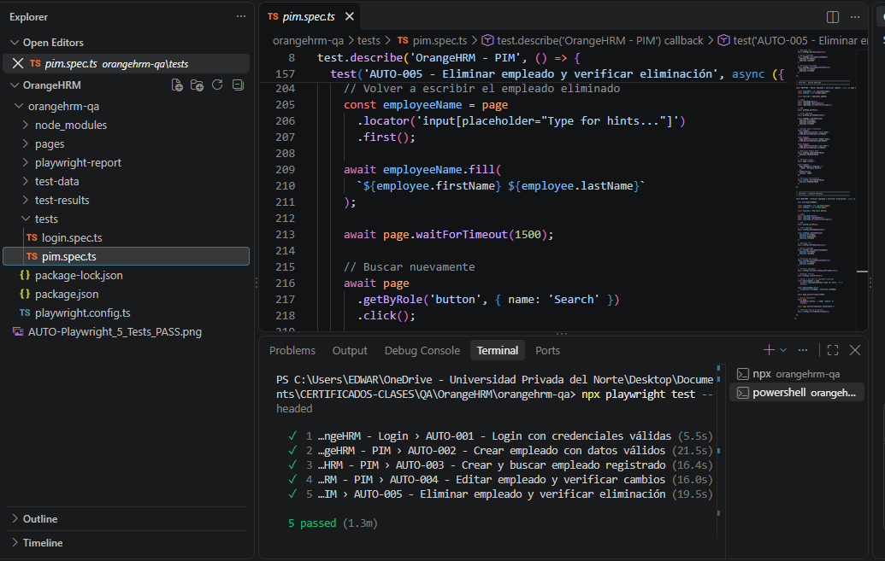

QA MANUAL · API · AUTOMATIZACIÓN E2E
OrangeHRM – QA Testing
Pruebas sobre OrangeHRM Demo enfocadas en Login y PIM, cubriendo los principales flujos de gestión de empleados mediante pruebas manuales, validación de API y automatización E2E.

RESULTADO PRINCIPAL
19/19 casos manuales PASS · 5/5 pruebas automatizadas PASS.
Se validaron creación, búsqueda, edición y eliminación de empleados, además de escenarios positivos y negativos de API. No se registraron bugs confirmados durante la ejecución.
- Trabajo realizado
- 19 casos manuales y escenarios BDD con Gherkin; análisis HTTP con DevTools; 5 pruebas de API en Postman y 5 flujos E2E con Playwright y TypeScript.
- Alcance
- Login y PIM: creación, búsqueda, edición y eliminación de empleados. Escenarios positivos y negativos de API; Page Object Model y separación de datos.
- Entregables
- Casos de prueba, escenarios Gherkin, colección de Postman, código automatizado y evidencias de ejecución: 19/19 manuales y 5/5 E2E aprobados.
Aplicación evaluada: OrangeHRM Demo. Proyecto de práctica QA para portafolio; la aplicación no fue desarrollada por mí.